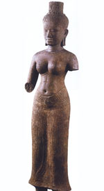

Ума ( "світла"), в індуїстської міфології благая іпостась богині Деви, дружини Шиви, бога-творця і бога-руйнівника. Подружжя жили на вершині священної гори Кайлас, де проживали всі головні боги індуїстського пантеону. Відповідно до одного з міфів, Ума прокляла бога багатства Кубера, позбавивши його очі за те, що він підглядав за нею, коли вона залишилася наодинці з Шивою. Кубера, який і до цього відрізнявся потворною зовнішністю - у нього було три ноги, вісім зубів, окрівев, з часом набув рис бога родючості, відрізнявся величезним животом. Богиня Розуму, світла іпостась Деві, була дочкою ансари Менака, полубожественного жіночого істоти, що жив переважно на небесах, але також в річках і на горах.
Ума (санскрит Uma) - в індійській міфології ім'я дочки Гімавата, що знаходиться в шлюбі з Шивою. Ім'я Ума - найдавніше і з'являється вперше, як ім'я дружини бога Рудри, прототипу Шиви, вже в водійських текстах (Тайттірія-араньяки і Кена-упанішад). У Рігведі воно ще не зустрічається. У Кена-Упанішади Ума є посередницею між Брахмой і іншими богами; Ума, як божество, мабуть отожествляется з уособленням мови - Вач (санскрит Vac = мова). У числі пізніших легенд про Умі є розповідь про те, як вона була захоплена мудрецями РШИ в лісі Гаури в той час, як перебувала в обіймах Шиви. Розгніваний бог прирік кожного самця, який з тих пір увійшов би в ліс, на перетворення в самку. Подібна ж історія розповідається і про богиню Рогиня, дружині Чандри (місяці), або Соми, яку останній застиг в обіймах Шиви. Шива звернув обманутого чоловіка в жінку, і з цього часу Чандра, або Сома, отримав жіноча стать. Ума вважається матір'ю богів Ганеші і Картік.